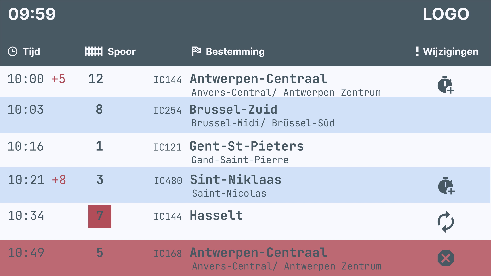
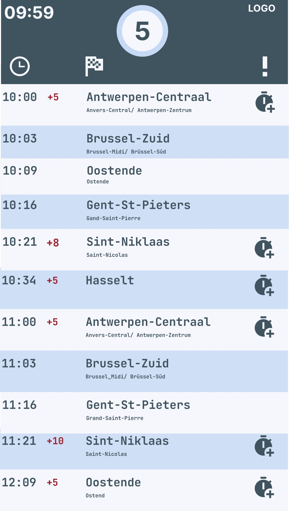
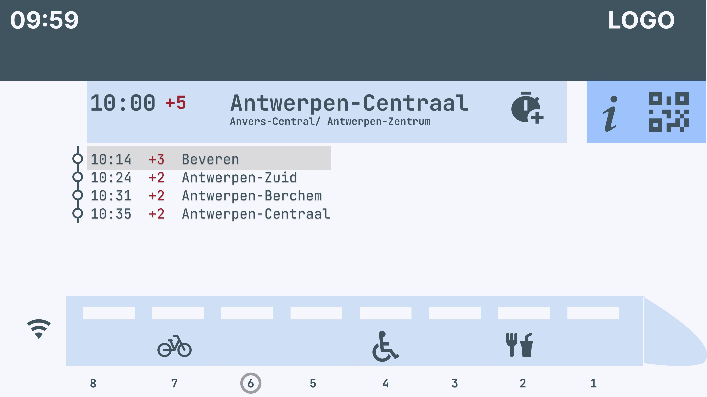

Feedback tijdens de les
Deze week werd mijn gepubliceerde html-file in de les eruit gekozen en werd hier feedback opgegeven.
- De leesbaarheid is niet top door de kleurkeuzes.
- De buttons met de links naar de lessen staan veel te groot.
- Betere indeling van de home page nodig.
TailwindCSS gebruiken in HTML-code
We hebben deze week een introductie gekregen over Tailwind. Met een beetje hulp van AI heb ik mijn code omgevormd. Daarna heb ik zelf delen code aangepast die minder goed waren. Zelf heb ik ook de kleuren en enkele classes aangepast.
Design Guidelines
Daarnaast hebben we deze les ook uitleg gekregen over enkele Design Guidelines. Hier heb ik dan ook opgelet bij het ontwerpen van mijn html-logboek.
Hierbij enkele voorbeelden die ik heb toegepast:
- Consistentie: Ik heb er voor gekozen om de feedback in de les telkens in een lichtblauwe kader te plaatsen. Alsook hoe ik die feedback heb gebruikt om mijn werk aan te passen. Daarnaast besloot ik om wat ik die week gedaan heb telkens in een wit kader met donkere rand te plaatsen. Zo blijft het overzicht van elke week consistent.
- Hiërachie creëeren: Door verschillende groottes van lettertypen alsook kleuren heb ik hiërachie in mijn werk kunnen creëeren. Zo zal de titel van die week veel groter en vetter staan dan de tekst zelf.
- Contrast ratio: Ik heb bewust gekozen om op donkere kleuren witte tekst te plaatsen en op lichte kleuren donkere tekst zodat het steeds duidelijk leesbaar is.
- Single sans serif lettertype: dit een digitaal format is heb ik een schreefloos lettertype gebruikt. Het lettertype blijft ook doorheen het logboek hetzelfde om een consistent en overzichtelijk resultaat te krijgen.
- Left aling tekst: tekst staat steeds links uitgelijnd, behalve wanneer het in een ‘button’ is geplaatst.
Herwerken Figma prototypes
Omdat ik deze week feedback had gekregen over de kleurencombinatie en leesbaarheid van mijn gepubliceerde html, besloot ik om deze week de kleuren over een totaal andere boeg te gooien. Aangezien ik dezelfde kleuren had gebruikt in mijn Figma prototypes, ben ik in Figma beginnen experimenteren met kleurencombinaties die beter leesbaar zijn. Ik heb al mijn schermen aangepast met die kleuren en heb deze dan ook toegepast op mijn HtML-file.




